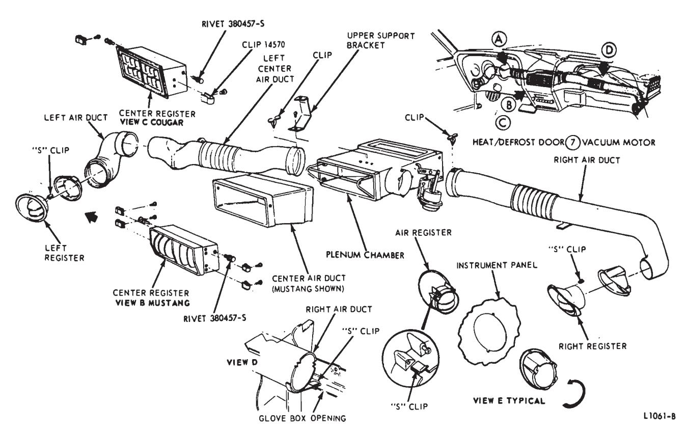
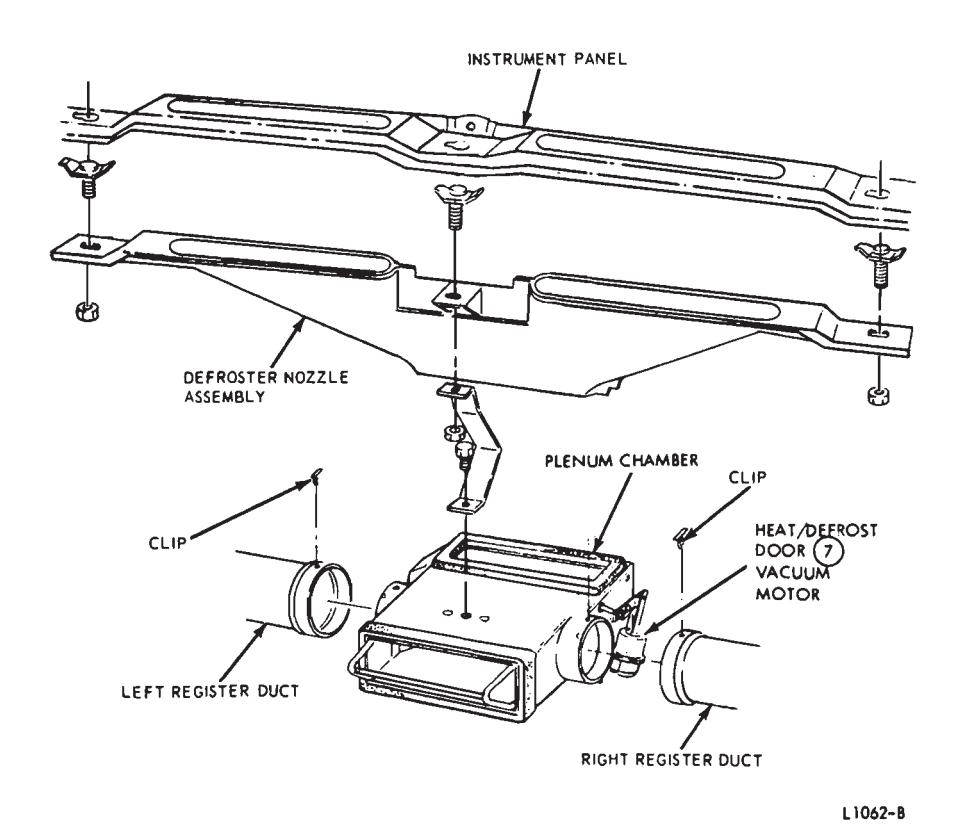
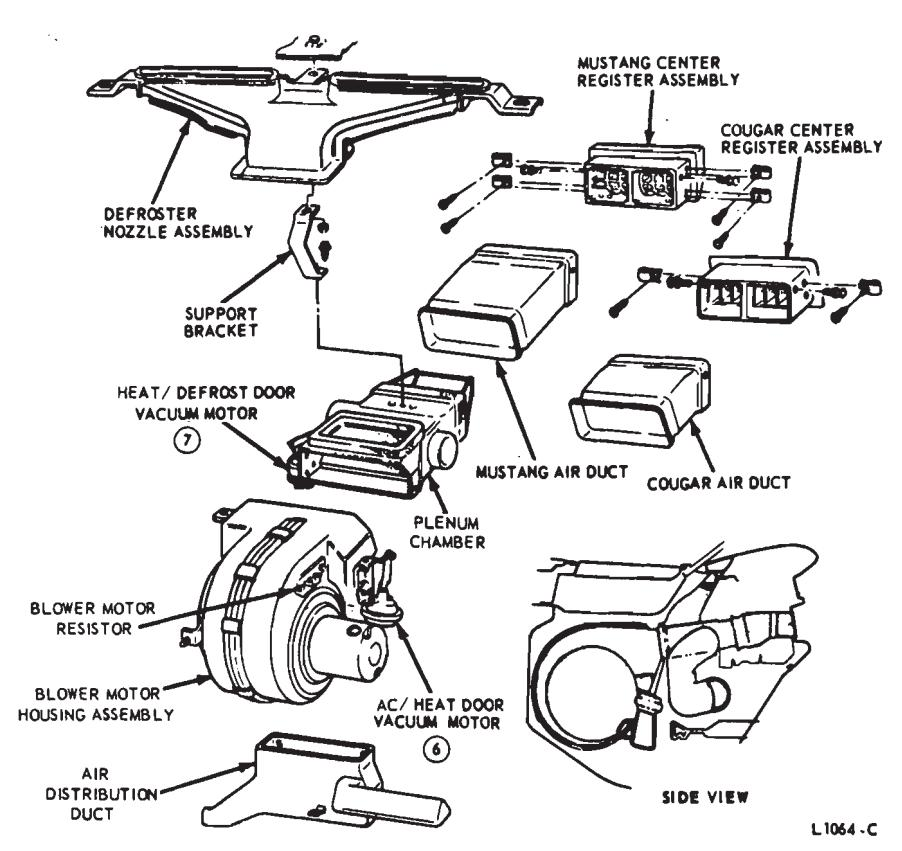
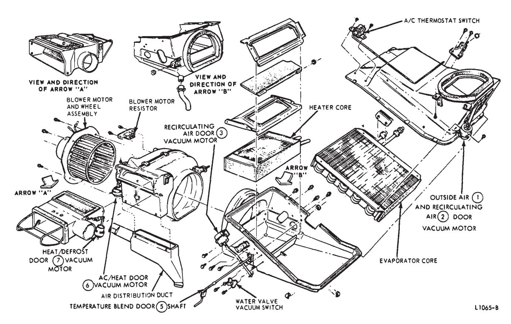
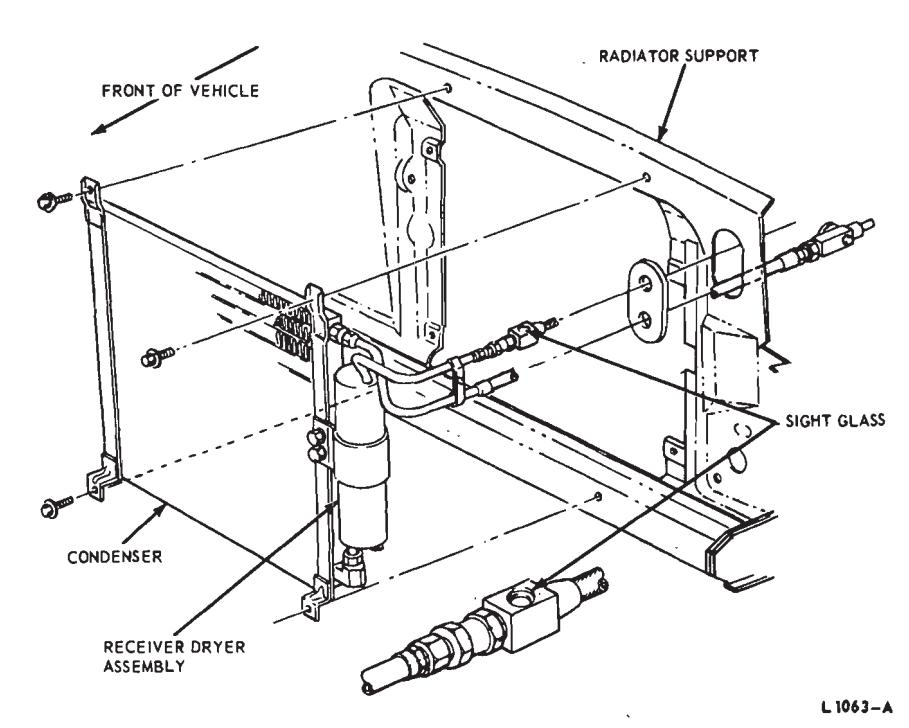
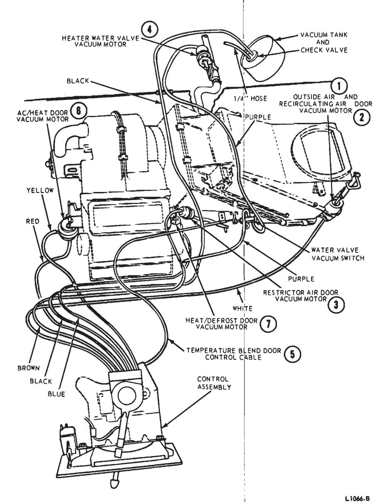
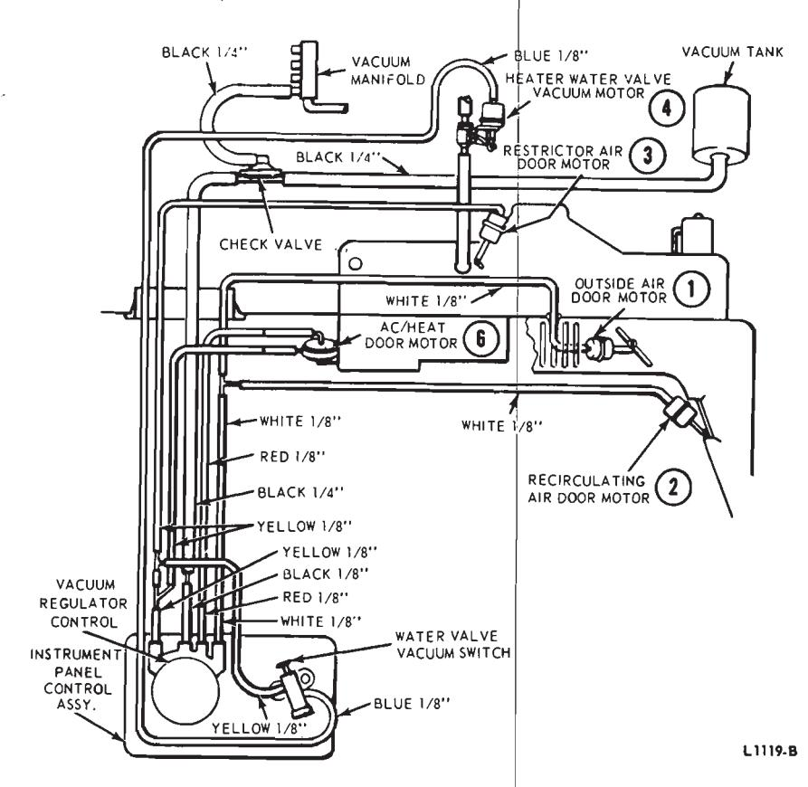
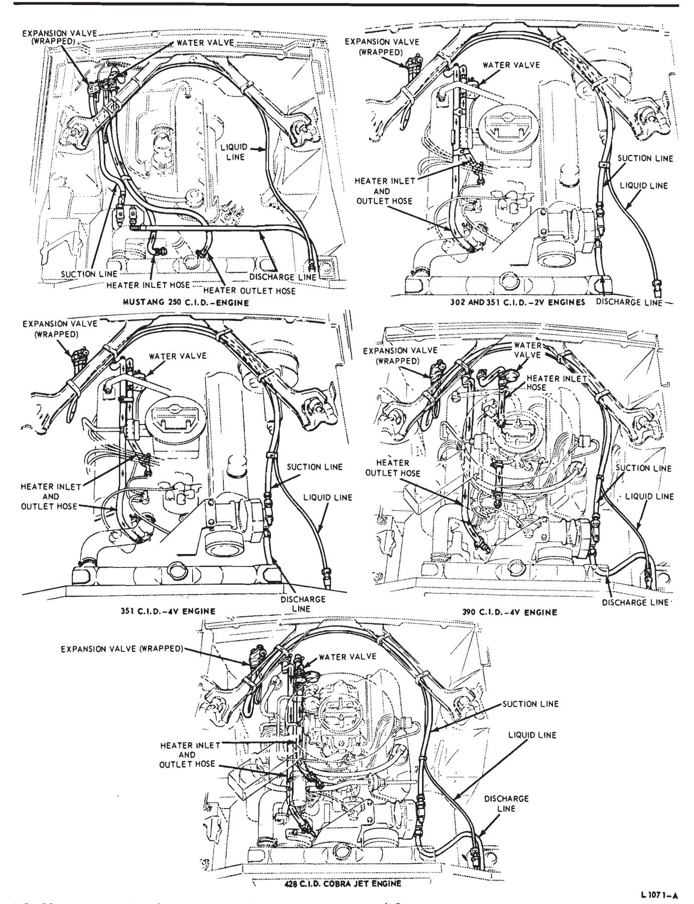

Air Conditioning Systems · 34-04-03c
Remove the plenum chamber. Then, remove three defroster nozzle retaining nuts and remove the defroster nozzle (Fig. 48).
Heater—A/C Control
Removal
- Remove the radio knobs and remove the instrument panel center finish panel from around the heater-A/C control.
- Remove the heater-A/C control attaching screws. Remove the radio (Group 35) and the ash tray from the instrument panel. Pull the control away from the instrument panel.
- Disconnect the two control cables from the control.
- Disconnect the blower switch and illumination bulb wires.
- Disconnect the vacuum hoses from the control assembly.
Installation
- Position the heater A/C control near the instrument panel opening. Connect the vacuum hoses, wires and control cables to the heater control.
- Position the heater A/C control to the instrument panel. Install the radio (Group 35) and the ash tray. Then, install the control attaching screws.
- Install the instrument panel center finish panel and the radio control knobs.
Heater—Air Conditioner Assembly
Removal
-
Disconnect the battery ground cable and remove the carburetor air cleaner.
-
Connect a manifold gauge set tothe compressor service valves and isolate the compressor. If the heaterair conditioner is being removed for repair to the refrigerant system, discharge the refrigerant system. 3. Drain the cooling system and remove the heat shield from the expansion valve.
-
Disconnect the suction (low pressure) refrigerant hose and service valve from the compressor.
-
Disconnect the high pressure hose at the quick disconnect.
-
Remove the straps retaining the refrigerant hoses to the dash-to-fender apron supports.
-
Disconnect the heater hoses from the heater core. Remove the upper and lower seal retainers and remove the hose seal (Fig. 49).
-
Remove two evaporator housing mounting stud nuts and the blower housing mounting stud nut from the engine side of the dash panel.
-
Remove the instrument panel pad (Group 47).
-
Remove the glove compartment assembly and support.
-
Remove the instrument cluster assembly (Group 33).
-
Disconnect the vacuum hoses from the restrictor air door (3) and outside air (1) and recirculating air (2) door vacuum motor (Fig. 50).
-
Disconnect the two vacuum hoses from the water valve vacuum switch.
-
Disconnect the control cable from the temperature blend door (5).
-
Disconnect the wires from the A/C thermostat switch (Fig. 50).
-
Disconnect the right and left air ducts from the Plenum Chamber (Fig. 47) and remove the air ducts.
-
Remove the A/C defrost plenum chamber (Fig. 48).
-
Remove the instrument panel right side brace.
-
Remove the evaporator housing upper rear support bracket-to-cowl attaching screw (Fig. 50).
-
Remove two blower housing-to-cowl attaching screws (Fig. 50).
-
Move the blower housing to the left away from the evaporator housing.

Fig. 47 — A/C Registers and Ducts—Mustang and Cougar
Fig. 48 — Defroster Nozzle Installation—Mustang -
Cover the carpet and pull the drain tube from the hole in the floor pan.
-
Remove two instrument panel-to-cowl panel attaching screws from the right side.
-
Remove the instrument panel lower finish cover from around the steering column. Remove the nuts and studs retaining the instrument panel to the steering column support.
-
Remove two instrument panel-to-cowl panel attaching screws from the left side.
-
Position the instrument panel back and remove the evaporator housing from the vehicle.
Installation
- I. Route the refrigerant hoses through the dash panel.
-
Position the blower assembly to the evaporator housing, and position the evaporator housing and blower housing to the dash panel.
-
Install the evaporator housing upper rear support bracket-to-cowl attaching screw, but do not tighten the screw.
-
Install the two evaporator housing and one blower housing mounting stud nuts on the engine side of the dash panel.

Fig. 49 — Heater-Air Conditioner—Mustang and Cougar -
Tighten the upper rear support bracket attaching screw.
-
Connect the vacuum hoses to the retrictor air (3) door and the outside air (1) and recirculating air (2) door vacuum motors, and the water valve vacuum switch.
-
Connect the wires to the A/C thermostat switch.
-
Install the two blower housing-to-cowl attaching screws.
-
Install the hose seal and retainers on the engine side of the dash panel.
-
Connect the heater hoses to the heater core.
-
Connect the refrigerant hoses to the compressor and the quick disconnect. Install the refrigerant hose support straps.
-
Install the heat shield over the expansion valve, and fill the cooling system.
-
Connect the control cable to the temperature blend door.
-
Install the four instrument panel attaching screws, and the nuts and studs retaining the instrument panel to the steering column support. Then, align the instrument panel, and tighten the attaching screws and the nuts and studs securely.
-
Install the instrument panel lower finish cover around the steering column.
-
Install the plenum chamber and connect the vacuum hose to the vacuum motor (Fig. 47).
-
Connect the air ducts to the plenum chamber (Fig. 47).
-
Install the instrument panel right side brace.
-
Install the evaporator housing drain tube in the hole in the floor pan.
-
Install the glove compartment assembly and support.
-
Install the instrument cluster (Group 33), and the instrument panel pad (Group 47).
-
Install the carburetor air cleaner and connect the battery ground cable.
-
Leak test and evacuate the compressor, and connect the compressor back into the system (See Isolating the Compressor in Section 3). If the A/C refrigerant system was discharged, it will be necessary to leak test, evacuate and charge the system.
Heater Core
Removal
- Remove the heater-air conditioner assembly from the vehicle.
- Remove the flange clips from the evaporator housing, and remove the top half of the housing (Fig. 50).
- Remove the water valve vacuum switch (Fig. 50).
- Remove the temperature blend door (5) shaft, door frames and the temperature blend door (5) from the lower half of the evaporator housing.
- Remove the heater core from the evaporator lower housing. Remove the pads from the heater core.
Installation
- Install the pads on the heater core, and position the core in the evaporator lower housing (Fig. 50).
- Install the temperature blend door (5) lower frame. Then, install the temperature blend door (5), shaft, and upper frame.
- Install the water valve vacuum switch.
- Position the evaporator housing top half to the lower half, and install the flange clips (Fig. 50).
- Install the heater-air conditioner assembly in the vehicle.
Evaporator Core
Removal
- Discharge the A/C system (NOTE SAFETY PRECAUTIONS) and remove the heater-air conditioner assembly from the vehicle.
- Disconnect the expansion valve and refrigerant hose from the evaporator core.
- Remove the flange clips from the evaporator housing, and remove the top half of the housing (Fig. 50).
- Slide the A/C thermostat (icing) switch capillary tube out of the hole in the evaporator housing.
- Remove the dash panel stud mounting bracket from the top half of the evaporator housing (Fig. 50).
- Remove the evaporator core retaining screws, and remove the evaporator core (Fig. 50).
- Remove the grommet from the evaporator core.
Installation
-
Install the grommet on the evaporator core tubes, and position the evaporator core in the upper housing.
-
Install the dash panel stud mounting bracket and the evaporator core retaining screws.
-
Insert the A/C thermostat (icing) switch capillary tube into the hole in the evaporator housing and into the evaporator core.

Fig. 50 — Heater-Air Conditioner Disassembled—Mustang and Cougar -
Position the top half of the evaporator housing on the lower half and install the flange clips.
-
Connect the expansion valve and refrigerant hose to the evaporator core.
-
Install the heater-air conditioner assembly in the vehicle. Leak test, evacuate and charge the A/C system.
Expansion Valve
Removal
- Remove the carburetor air cleaner.
- Remove the insulation from the expansion valve.
- Install a manifold gauge set and discharge the system (Section 3).
- Disconnect the high pressure hose from the expansion valve.
- Remove the expansion valve bulb from the clamp.
- Remove the expansion valve from the evaporator core.
Installation
- Install the expansion valve on the evaporator core fitting.
- Position the expansion valve sensing bulb in the clamp and tighten the retaining screw.
- Connect the high pressure hose to the expansion valve.
- Wrap the insulation around the sensing bulb and expansion valve.
- Install the carburetor air clean-
- Leak test, evacuate, and charge the system (Section 3).
Thermostatic (ICING) Switch
Removal
- Remove the glove box liner.
- Disconnect the wires from the thermostatic (icing) switch.
- Remove two switch attaching screws and pull the sensing tube from the evaporator core.
Installation
- Insert the thermostatic (icing) switch sensing tube into the evaporator core fins.
- Position the thermostatic (icing) switch to the evaporator case and install the two attaching screws. 3. Connect the wires to the switch. 4. Install the glove box liner and check the operation of the thermostatic (icing) switch.
Clutch Switch
Remove the heater-A/C control assembly from the instrument panel. Disconnect the two wires from the clutch switch, and remove the 2 switch attaching screws.
Dehydrator-Receiver Tank
Removal
- Discharge the refrigerant into the garage exhaust system if the cooling system still contains some refrigerant. 2. Remove the left horn.
- Disconnect the two upper hoses from the tank (Fig. 51).
- Loosen the lower fitting. Remove the screws retaining the receiver tank to the condenser. Then, disconnect the lower fitting and remove the tank.
Installation
-
Position the receiver tank and loosely fasten the lower fitting. Install the screws retaining the tank to the condenser. Tighten the lower fitting (Fig. 52).

Fig. 51 — Condenser Installation—Mustang and Cougar -
Connect the upper hoses to the tank. 3. Install the left horn.
-
Leak Test, Evacuate, and charge the air conditioning system. Check the air conditioning system for proper operation.
Condenser—Cougar
Removal
- Discharge the system.
- Remove both horns.
- Remove the hood lock and support assembly (Fig. 51).
- Disconnect the hose from the compressor-to-condenser at the condenser (Fig. 52).
- Disconnect the evaporator-to-condenser hose at the receiver tank.
- Remove the four screws retaining the condenser-to-radiator support. Remove the condenser. 7. Remove the receiver tank.
Installation
- Position the receiver to the condenser. Install the retaining screws and fasten the fitting.
- Position the condenserto-radiator support and install the four retaining screws. 3. Connect the evaporator- - to-condenser hose at the receiver tank (Fig. 51).
- Fasten the compressorto-condenser hose.
- Install the hood lock and support assembly. 6. Install both horns.
- Leak test, evacuate, and charge the air conditioning system. Check for proper operation.
Condenser—Mustang
Discharge the air conditioner refrigerant system. Remove the hood latch support and the horns. Disconnect the refrigerant lines and remove four condenser attaching screws. Then, remove the condenser (Fig. 51).
Recirculating Air Door (2) Vacuum Motor
Removal
- Remove the glove compartment strap screw and let the glove compartment liner hang down.
- Disconnect the vacuum hose and disconnect the right register assembly (Fig. 5). Position the duct to one side.
- Remove the right courtesy light and position it to one side.
- Remove the screw connecting the motor arm to the control rod.
- Remove the two screws retaining the motor to the mounting bracket and remove the motor.

Fig. 5 — Vacuum System Diagram—Mustang and CougarInstallation
- Position the motor to the mounting bracket and fasten the retaining screws.
- Install the screw connecting the motor arm to the control rod.
- Connect the hose to the motor and connect the right duct to the right register assembly. 4. Install the courtesy light.
- Position the glove compartment liner in place and install the strap retaining screw.
Ac/heat Door (6) Vacuum Motor
- Disconnect the vacuum hoses from the vacuum motor.
- Remove the vacuum motor attaching screws and disconnect the vacuum motor arm from the AC/heat door (6) arm link (Fig. 49).
- Position the vacuum motor to the AC/heat door (6) arm link and the blower housing, and install the attaching screws.
- Connect the vacuum hoses to the motor as shown in Fig. 3, Part 34-03.

Fig. 3 — Vacuum System Schematic—Ford, Mercury and MeteorHeat/defrost Door (7) Vacuum Motor
Removal
- Disconnect the battery ground cable and remove the instrument panel pad (Group 47).
- Remove the instrument cluster (Group 33).
- Disconnect the air ducts from the plenum chamber and move the air ducts aside.
- Remove the plenum chamber. Then, remove the heat/defrost door (7).
Installation
- Install the vacuum motor on the plenum chamber and install the plenum chamber.
- Connect the air ducts to the plenum chamber.
- Install the instrument cluster (Group 33) and the instrument panel pad (Group 47).
- Connect the battery ground cable to the battery.
Restrictor Air Door (3) Vacuum Motor
Removal
-
Remove the instrument panel - pad (Group 47) and disconnect the battery.

Fig. 52 — Heater and Refrigerant Hose Routings—Mustang and Cougar -
Remove the glove compartment check strap.
-
Remove the instrument cluster (Group 33). 4. Remove the plenum chamber.
-
Disconnect the vacuum hose from the restrictor air door (3) vacuum motor.
-
Remove the two motor attaching screws (Fig. 50).
-
Working through the glove compartment opening, remove the motor arm-to-link screw and remove the restrictor air door (3) vacuum motor.
Installation
- Position the vacuum motor arm to the link and install the attaching screw.
- Position the vacuum motor to the evaporator housing, and install the attaching screws (Fig. 50).
- Connect the vacuum hose to the vacuum motor.
- Install the plenum chamber (Fig. 47).
- Install the instrument cluster (Group 33), and the instrument panel pad (Group 47).
- Install the glove compartment check strap, and connect the battery.
Blower and Motor
Removal
- Remove the accelerator pedal assembly.
- Remove the lower air distribution duct (Fig. 49).
- Disconnect the blower motor wiring.
- Remove the four blower motor mounting plate attaching screws, and remove the blower and motor (Fig. 50).
Installation
- Position the blower and motor to the blower housing and install the attaching screws.
- Connect the blower motor wiring.
- Install the lower air distribution duct.
- Install the accelerator pedal assembly.
Blower Resistor and Blower Switch
Refer to the blower resistor procedure in Part 34-03.
Heater and Refrigerant Hoses
The heater-air conditioner hose routings are shown in Fig. 52.